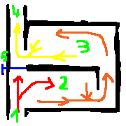

Отопление. Печи. Колпаковые и двухколпаковые
В прошлый раз мы начали разговор о печах и сравнили чем голландки отличаются от русских. Я упомянул о русских печах с колпаком и сказал, что они получили развитие в ХХ веке. И сказал правду, но не всю. Ибо ещё раньше, в посте про тёплый пол упоминал о римских зданиях и христианских церквях, пол которых обогревался горячим дымом.
В современном мире, по крайней мере у нас в России, отопление дровами считается пережитком прошлого, от которого надо избавляться. Ибо прогресс, благоденствие и центральные сети. Но, скажу я вам, подобные настроения не долго проживут, и тому есть объективные причины.
Во-первых, ископаемые углеводороды конечны. Кто-то говорит, что их хватит лет на 50, кто-то — на 100. Пессимисты же вообще обещают нам к 2030-му году кузькину мать, и я с пессимистами согласен, но по другим причинам. Во-вторых, в ядерную энергетику я тоже не верю: и если вы копнёте чуть глубже, чем обывательские знания о ней, вы присоединитесь ко мне в этом мнении. Обсуждать подробности не буду, просто скажу, что при том техническом регламенте строительства станций, который эксплуатировался до настоящего момента и эксплуатируется сейчас, мы ещё увидим и Чернобыль, и Фукусиму. Это просто вопрос времени.
В-третьих, тесловского генератора ещё не собрали, и свободная энергия ещё не пришла в каждый дом. То тут, то там проскакивают видяшки, чертежи, статьи о том, что НАКОНЕЦ-ТО! Но лично я своими руками ещё не трогал агрегат, который способен из ничего вырабатывать хоть что-то. Честно признаюсь, надежда есть. Но сомневаюсь что раньше 30-50-х годов нам кто-то что-то выдаст. Попомните мои слова, цифры не с потолка.
И, учитывая вышесказанное, остаётся надеятся только на Солнце, ветер и дрова. И в этом списке дрова остаются самым надёжным источником тепла. Тем более, что нам доступны материалы и технологии, не доступные нашим предкам. И неглупые люди ведут исследования в области печного отопления и продвинулись в этом вопросе.
Но и наши предки были не промах. И их наследие забывать глупо. Тем более, что есть на что посмотреть.
Колпаковые печи
Как я уже говорил, физика проста: тепло поднимается вверх. Предки это понимали чуть ли не лучше нас. И они поняли, что можно печь сделать снизу, и сделать большой колпак под полом следующего этажа. Так делали, как я уже говорил, в некоторых римских зданиях. Читал также упоминания что так делали в католических церквях Европы и даже в православных церквях на Руси после ХII века.
В Корее же до сих пор самой распространённой системой отопления "частных домов" является т.н. система «ондоль». Что это такое — подробное видео здесь . Популяризатор строительства из соломенных блоков Евгений Широков в вебинаре упоминает о корейском доме, который топился несколько дней, и после этого держал тепло около ста дней (!). Отопление в нём было сделано как раз по системе «ондоль». К сожалению, во время войны дом был разрушен, и подивиться на это чудо корейской мысли не получится...
Объединяет всё перечисленное то, что дымоходы сделаны по принципу колпака. Он имеет большую горизонтальную площадь, и засчёт этого достигается эффективная отдача тепла от дыма к находящемуся сверху полу. Понятное дело, дымоходы со временем забиваются пеплом и сажей. Для этого предусматривали специальные прочистные отверстия и даже целые лючки, в которые мог пролезть человек.
Корейцы же поступают просто: колпаки делали и делают большими по объёму. Засчёт этого они забиваются от 10 до 50 лет, и потом печь просто ломают и делают новую. Если посмотреть на видео с ондолью, то можно понять что не обязательно даже ломать всю печь. Можно просто разобрать одну стенку...
Кое-кто пошёл ещё дальше и ломает печь каждый год. Здесь можно прочитать статью такого чувака. Статья маленькая, но жутко полезная. Вместо того, чтобы читать сотни страниц форумов и по крупицам собирать информацию (не всегда проверенную), лучше прочитать вот такую статью практика, который всё проверил на себе. Очень рекомендую!
Кстати, для читателей из моего родного Благовещенска Амурской области. Из достоверного источника есть информация, что здание железнодорожного вокзала отапливалось сетью дымоходов по периметру стен. Мне было бы ужасно интересно изучить как там что работает, но, боюсь, система не используется уже давно. И человек, который мог бы что-то рассказать вряд ли имеется. А на просьбу показать чертежи, догадываюсь, меня пошлют в соответствующем направлении... Если у кого-то есть данные, сообщите. Думаю, всем будет интересно.
Двухколпаковые печи
Вот теперь перейдём к ХХ веку. В Советском Союзе было такое дикое количество сумасшедших проектов печей, что я диву даюсь. Правда, часто практическая проверка показывает их несостоятельность. Буквально лет пять назад на одном печном форуме выложили чертёж 30-40-х годов кирпичной печи циллиндрической формы. Ссылку привести не могу, почему-то не нашёл. Затерялась. Но дело там кончилось тем, что вся эта циллиндрическая печка забилась пеплом за 3 сезона...
Но кое-что из советского наследия оказалось весьма и весьма эффективным и получило массовое распространение. Если вы интересуетесь печным отоплением, вы наверняка слышали про печи Кузнецова. Мастер этот, кстати, жив и здравствует. Более того, у него можно заказать печь на его сайте. Кто-то его считает человеком-легендой.
Он предложил и обосновал преимущество концепции свободного течения газов (в голландках используется принцип принудительного движения газов, я упоминал об этом минусе). И придумал двухколпаковые печи. Принцип их работы простой.
Если открыта задвижка (5), то дым идёт напрямую в трубу. Это если нам нужно создать тягу при растопке. Потом задвижка (5) закрывается и дым начинает своё путешествие.
Сначала он попадает в первый колпак (2). Горячие газы поднимаются наверх и остаются там пока не отдадут своё тепло, либо их не заменят ещё более горячие газы. Более того, по информации чувака-разбирателя-печей, указанной в той самой статье, в первом колпаке газы продолжают гореть!
Но рано или поздно газы остывают, и гонимые тягой идут во второй колпак (3). Там происходит то же самое, что и в первом, за исключением горения. Хотя, кто знает.
После отдачи тепла, газы уходят в трубу (4).
Принцип свободного течения в том, что газы при необходимости могут уйти дальше по дымоходам не дожидаясь остывания, а сразу. Т.е. на трубе не лежит задача просасывать все газы по трубам (как в голландках), она просто помагает им, указывает направление. А двигаются они вполне свободно, сами по себе.
У такой системы много плюсов. Как шутят печники, в таких печах используется принцип защиты от дурака.
Во-первых, такая печь гораздо меньше дымит (если дымит вообще).
Во-вторых, если прошляпить момент прогорания дров, то холодный воздух будет идти по нижней части колпаков, не задевая стоящие сверху горячие газы. Т.е. колпаки — это своего рода карманы для сохранения тепла.
В-третьих, в таких печах низ прогревается сильнее чем верх. На схеме я изобразил как газы, двигаясь по колпакам постепенно остывают. Соответственно, самым горячим будет первый колпак, второй будет холоднее. Надеюсь, не нужно объяснять почему это хорошо.
В-четвёртых, как показала практика, колпаковые печи можно чистить гораздо реже чем их голландских коллег.
Кстати, можно делать не два, а сколько угодно колпаков. Как по вертикали, так и по горизонтали. Таким образом можно регулировать нагрев тех или иных стен (или помещений), ведь первый колпак будет самый горячий, второй холоднее и т.д.
Вывод
Напомню, чем равномернее прогревается помещение, тем эффективней отопление. И это не просто комфортность, но и экономия топлива. И долговечность конструкций (отсутствие плесени и грибка по углам и плинтусам).
Так что чем ниже находится источник тепла — тем лучше. И лучше всего этому принципу отвечают колпаковые и двухколпаковые печи.
На сегодня всё. Надеюсь, как в прошлый раз жаловаться не будете :)
В следующий раз расскажу про то, как сделать и колпаковую, и двухколпаковую печь ещё более эффективной.